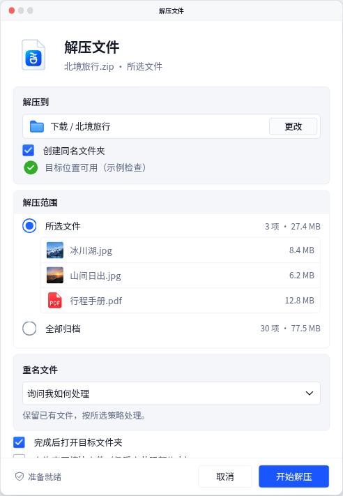
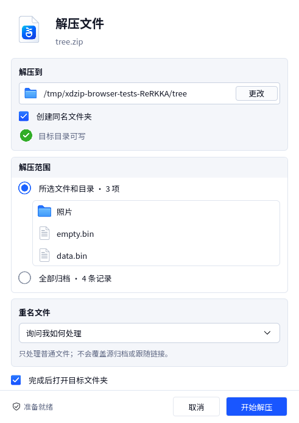

xdzip · 解压窗口修订对照
正常宽度统一为 491 逻辑像素，正文与 footer 操作为 13。HTML 的嵌入和独立入口共用最终尺寸，Qt 直接使用同一契约。下图为实际捕获，没有截图缩小或后期重绘；原稿仅裁去外背景，并按记录的源坐标比例展示。
默认状态与原稿
HTML · 100%

照片示例，路径栏内嵌更改按钮，范围正文为白色，footer 固定可达。系统装饰为 HTML 外观示意。
实际 Qt · DPR 1

真实 ZIP 和自有目标目录，含目录及文件选择。491×693 客户区；原生系统标题栏不包含在 grabWindow 中。
未修改的高保真原稿
源坐标采用 819.2／1548 比例，应用窗口宽度约 491；原稿外背景、标题栏与当前真实数据不属于客户区像素一致性承诺。
下拉组件
深色与菜单阴影